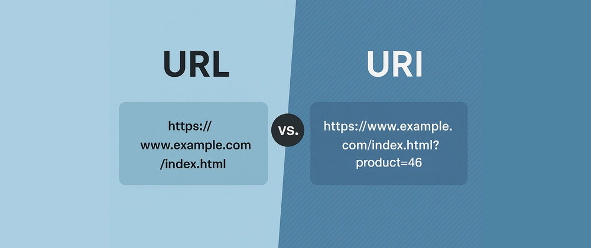

Uniform Resource Identifier (URI)
Category: Navigation & Standards
Definition
A URI is a sequence of characters used to identify a logical or physical resource on the Internet. It is the broad umbrella term that includes both URLs (Locators) and URNs (Names).
URI vs. URL: The Distinction
To provide a thorough elaboration, we must distinguish between the two most common types of URIs:
- URL (Uniform Resource Locator): Identifies a resource by describing how to get to it (e.g.,
https://www.google.com). - URN (Uniform Resource Name): Identifies a resource by name in a particular namespace, regardless of its location (e.g.,
isbn:0451524934for a specific book).
Analogy: If a person is the "resource," their URL is their home address, and their URN is their Social Security Number or Name.
Relationship Diagram

Technical Structure
A URI generally follows this generic syntax:
scheme:[//authority]path[?query][#fragment]
This structure allows the World Wide Web to remain flexible, as it can identify anything from a website document to an email address (mailto:someone@example.com) or a telephone number.